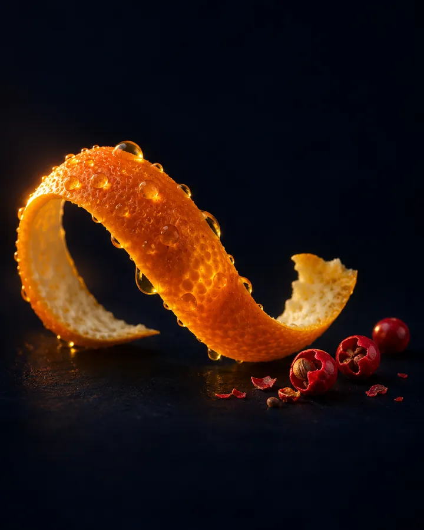

Bitter orange
Cold-pressed peel with a pinch of pink pepper. The first thing you notice and the first to go.
Strongest in the first 30 minutesAn amber that smells of the hour after sunset: bitter orange, smoked tea and warm resin.
25 zł, credited to the bottle within 30 days.Bright and a little sour for the first twenty minutes.
The middle hours are dry, like a room where someone has just put out a candle.
Benzoin and birch resin stay close to the skin for six to eight hours.
A 2 ml sample for 25 zł, taken off the bottle if you come back for it.
A perfume changes as its lightest molecules leave first. Move the time below and see which part of Łuna you would be smelling.

Cold-pressed peel with a pinch of pink pepper. The first thing you notice and the first to go.
Strongest in the first 30 minutesLapsang-style black tea, dried over pine, softened by orris root.
Strongest between 1 and 3 hoursBenzoin, labdanum and a trace of birch tar. Warm, resinous, slightly leathery.
From 2 hours to the end of the dayTypical evaporation curves for each family of notes. Skin, heat and fabric shift them by an hour either way.
One on the inside of each wrist. Łuna is an eau de parfum at 18 per cent; more is just louder.
Rubbing warms the skin and burns through the orange. Let it dry for a minute.
A scarf or a coat collar holds the amber for a day or longer.
25 złSample, 2 ml. The 50 ml bottle is 420 zł.
Six to eight hours on skin, and a day or more on wool.
Less than most ambers. The smoke and the bitter orange keep it dry.
Anyone. There is no men's or women's version.
Eau de parfum, 18 per cent aromatic compounds.
Unopened, within 30 days. The sample exists so you will not need to.
Blended and bottled by hand in batches of 300.